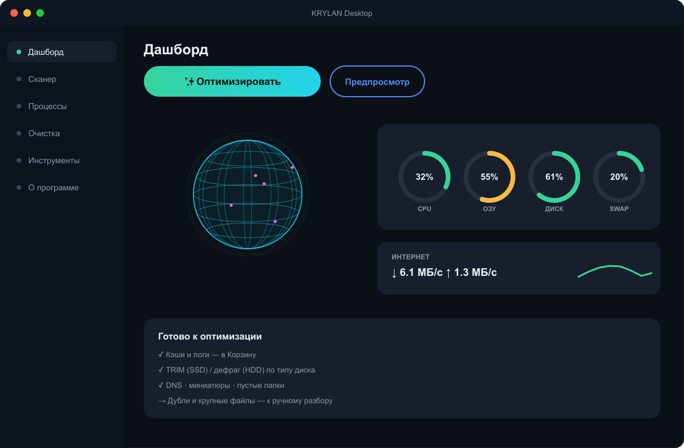
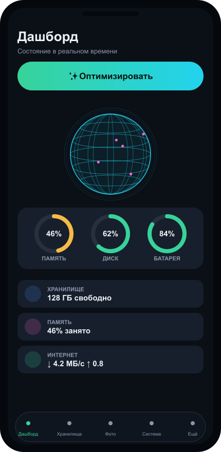

Красивый оптимизатор со «стеклянным» интерфейсом и фирменным анимированным глобусом. Ускорить одной кнопкой, Software Updater, бенчмарк диска, sunburst-карта, живой график интернета. Мощнее CleanMyMac и BoostSpeed — но бесплатно, с открытым кодом и без вредных «бустеров» (никакого дефрага SSD и чистки реестра).
brew install --cask https://raw.githubusercontent.com/Alex1986-rgb/CleanMac/main/Casks/cleanmac.rb


Возможности — по платформам
Везде одна ДНК: анимированный глобус, HUD-дашборд, живые метрики и Автопилот в фоне. Внутри каждой платформы — по смыслу: Дашборд · Автопилот/Очистка · Разбор медиа · Приватность · Инструменты.
macOS — CleanMac 2.48.0
Дашборд
HUD с глобусом и кольцами-гейджами Health / CPU / ОЗУ / SWAP / Диск, пончики памяти и диска, тренды, живой график интернета ↓/↑, батарея, процессы.
Автопилот · Очистка
Smart Care в 1 клик (кэши/логи → Корзина, снимки APFS, Quick Look, разгрузка памяти), Автопилот — фоновый страж памяти, умная очистка и очистка по категориям — всё в Корзину, обратимо.
Разбор медиа
Дубликаты, похожие фото, тяжёлые вложения Почты (Mail.app), сжатие (VACUUM) раздувшихся баз браузеров.
Приватность · Защита
Следы браузеров (история, cookies), недавние файлы, состояния окон. Защита + adware-скан LaunchAgents — эвристика по точкам автозапуска.
Инструменты
Sunburst-карта диска с drill-down, деинсталлятор, диск-доктор + бенчмарк чтения/записи, шредер, Software Updater (brew), спутник в меню-баре, EN/RU, автообновление.
Desktop — Windows · Linux · macOS 1.18.0
Дашборд
HUD с глобусом и живыми метриками (CPU / ОЗУ / диск / скорость интернета), диспетчер процессов.
Автопилот · Очистка
✨ Оптимизировать (адаптивно под ОС и тип диска), Автопилот (фон + автозапуск при входе), Focus Mode — обратимая пауза фоновых процессов; очистка кэшей, автозагрузка, пустые/битые файлы, битые ярлыки.
Разбор медиа
Дубликаты (blake2b), похожие фото (perceptual hash), крупные и старые файлы, карта диска.
Приватность
Очистка следов браузеров по профилям, менеджер расширений браузеров.
Инструменты
Деинсталлятор, контекстное меню, диск-доктор (SMART), Snap/Flatpak и предустановленное ПО (Linux), bloatware-листер (Windows), корзины томов, шредер, Software Updater (winget/brew/apt), Health Report (HTML), экспорт CSV/HTML.
iPhone / iPad — KRYLAN для iOS
Дашборд
HUD на один экран + тапабельные кольца: тап по кольцу метрики запускает её очистку. Хранилище с разбивкой по категориям, батарея.
Автопилот · Очистка
✨ Оптимизировать (все параметры), Автопилот — фоновая проверка + честные уведомления, трофей «До/После» (поделиться), очистка кэша, виджет.
Разбор медиа
Фото (дубли / серии / размытые / похожие — Vision), видео, скриншоты, Live Photos. Мультивыбор + удаление разом + оценка «освободишь ≈ X» + превью по долгому нажатию, swipe-разбор.
Приватность · Геолокация
Геолокация: выключить геопозицию, гид по настройкам и убрать гео-метки из фото.
Инструменты
Контакты (дубли / неполные карточки), старые события календаря (EventKit), «Недавно удалённые».
Android — KRYLAN
Дашборд
HUD-дашборд с глобусом, умные подсказки (Files-style карточки), хранилище.
Автопилот · Очистка
✨ Оптимизировать, Автопилот (WorkManager + уведомления), очистка своего кэша, мультивыбор + корзина / undo + оценка освобождаемого места.
Разбор медиа
Крупные файлы, медиа-дубли, похожие/размытые фото (perceptual hash + Лапласиан), видео, APK.
Приватность · Геолокация
Геолокация и честные формулировки под Google Play — никаких «ускорим как новый».
Инструменты
Неиспользуемые приложения (UsageStats), осиротевшие файлы (CorpseFinder-lite).
🛡️ Почему KRYLAN безопаснее конкурентов
Наше УТП — только обратимое и честное. Никаких трюков, которыми грешат агрессивные «бустеры».
❌ Без чистки реестра
CCleaner, BoostSpeed и Glary чистят реестр «для скорости» — и ломают Windows. Мы этого не делаем.
❌ Без дефрага SSD
Дефрагментация SSD не ускоряет, а изнашивает накопитель. KRYLAN дефрагментирует только магнитные HDD.
❌ Без фейк-бустеров
Никаких «RAM boost» и «ускорим в 10 раз» (как Boost Cleaner, 1Tap). Только реальная разгрузка памяти.
❌ Без страшилок
Никаких «storage full!» ради тапа. Честные локальные уведомления — как требуют политики App Store и Google Play.
✅ Только обратимое
Любое удаление — в Корзину, «Недавно удалённые» или корзину с undo. Передумали — вернули.
✅ Честные цифры в ГБ
Реальные гигабайты и превью «что и сколько освободится» до очистки. Системное под защитой — решаете вы.
📸 Скриншоты — на всех устройствах
Тёмная тема, фирменный глобус, единая кнопка «✨ Оптимизировать» — Desktop, iPhone и Android.




✨ Оптимизировать — умная кнопка для любого устройства
Одна кнопка ✨ «Оптимизировать» делает РАЗНОЕ на разных устройствах. KRYLAN сам определяет ОС (Windows / macOS / Linux) и тип диска (SSD или HDD) и подбирает только то, что на этом железе безопасно и полезно. SSD-дефраг, например, изнашивает накопитель — поэтому KRYLAN его никогда не делает.
| Функция | Windows | macOS | Linux | Почему адаптивно |
|---|---|---|---|---|
| Кэши / логи / temp → Корзина | ✅ | ✅ | ✅ | Освобождает место обратимо на всех ОС |
| Кэш миниатюр | ✅ thumbcache |
✅ Quick Look | ✅ ~/.cache/thumbnails |
У каждой ОС своё хранилище превью |
| Сброс DNS | ✅ flushdns |
✅ dscacheutil |
✅ resolvectl |
Разные службы резолвинга в каждой ОС |
| TRIM (обслуживание SSD) | ✅ defrag /L |
✅ авто системой | ✅ fstrim |
Поддерживает скорость SSD; на mac это делает сама система |
| Дефрагментация (ТОЛЬКО HDD) | ✅ defrag /O |
— не нужна (APFS) | — не нужна (ext4) | Нужна лишь магнитным дискам; совр. ФС не фрагментируются |
| SSD-дефраг | ❌ никогда | ❌ никогда | ❌ никогда | Вредно — изнашивает накопитель |
| Пакетные кэши | — | ✅ brew cleanup |
✅ apt clean + journal |
Чистится только там, где есть пакетный менеджер |
| Разгрузка памяти | — нет безопасного userland | ✅ purge |
✅ sync |
На Windows нет безопасной userland-команды |
| Предпросмотр оптимизации (что и сколько освободит) | ✅ | ✅ | ✅ | Сначала показываем, потом чистим — никаких сюрпризов |
| Пустые папки · битые файлы · остатки удалённых программ | ✅ | ✅ | ✅ | Универсальная уборка для всех ОС |
Экосистема KRYLAN — для всех устройств
Анимированный глобус, метрики и скорость интернета ↓/↑ в реальном времени — теперь на каждой платформе.
macOS — доступно
CleanMac 2.48.0, universal (Intel + Apple Silicon). Smart Care, Автопилот, бенчмарк диска, sunburst-карта, adware-скан, глобус, живой график интернета.
Windows / Linux — доступно
KRYLAN Desktop 1.18.0: глобус, Автопилот, Focus Mode, Software Updater (winget/brew/apt), похожие фото, диск-доктор, шредер, экспорт CSV/HTML, Health Report. Один код для всех ПК.
iPhone / iPad — доступно
KRYLAN для iOS: глобус, тапабельные кольца, Автопилот, трофей «До/После», фото (дубли/серии/размытые/похожие/Live), swipe-разбор, видео, контакты, календарь, Геолокация, виджет.
Android — доступно
KRYLAN для Android: глобус, Автопилот, умные подсказки, медиа-хаб (крупные/дубли/похожие/видео) с корзиной и undo, неиспользуемые приложения, осиротевшие файлы, APK, Геолокация, виджет диска.
Скачать
macOS
CleanMac.dmg или Homebrew.
Windows / Linux
KRYLAN Desktop. Linux — готовый бинарник, Windows .exe скоро (CI).
⬇︎ Linux x86_64 ⬇︎ ReleasesiPhone (beta)
Файл .ipa — установка через бесплатный Sideloadly или AltStore с вашим Apple ID:
2. Подключите iPhone кабелем
3. Sideloadly → перетащите .ipa → Start
Подпись бесплатного Apple ID живёт 7 дней, потом переустановить. App Store / TestFlight — скоро.
Android (beta)
Готовый APK — установка напрямую (sideload):
2. Разрешите установку из этого источника
3. Откройте файл → Установить
Тестовая сборка (debug) для установки напрямую. Для Google Play собирается release .aab в Android Studio.
📖 Установка и использование
Пошагово для каждого устройства. macOS 2.48.0 · Desktop 1.18.0.
macOS — CleanMac
- Скачайте CleanMac.dmg со страницы Releases.
- Откройте .dmg и перетащите CleanMac в «Программы».
- Первый запуск: ПКМ по иконке → «Открыть» → «Открыть» (приложение вне App Store, без подписи — это разовое действие).
- Альтернатива — Homebrew:
Требования: macOS 11+, Apple Silicon или Intel (universal).
Windows — KRYLAN Desktop
- Скачайте KRYLAN-Windows.exe со страницы Releases.
- Если SmartScreen предупреждает: «Подробнее» → «Выполнить в любом случае» (сборка без платной подписи).
- Запустите — Python уже внутри, ничего ставить не нужно.
Linux — KRYLAN Desktop
- Скачайте KRYLAN-linux-x86_64 со страницы Releases.
- Дайте права и запустите:
./KRYLAN-linux-x86_64
tcl/tk включены в сборку. Если в системе нет tkinter: sudo apt install python3-tk.
iPhone / iPad — KRYLAN (beta)
- Скачайте .ipa со страницы Releases.
- Установите через бесплатный AltStore или Sideloadly с вашим Apple ID.
- Подпись бесплатного Apple ID живёт 7 дней — потом переустановить. App Store / TestFlight — позже.
Android — KRYLAN
- Скачайте .apk со страницы Releases.
- Разрешите «Установка из этого источника».
- Откройте файл → «Установить». (Для Google Play в релизе есть и .aab.)